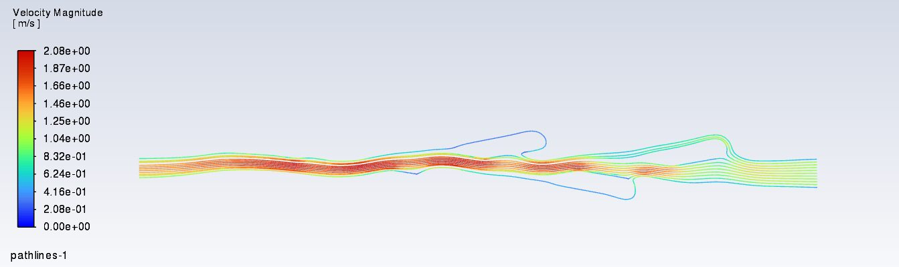
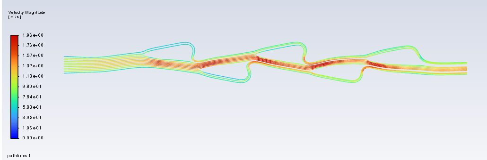
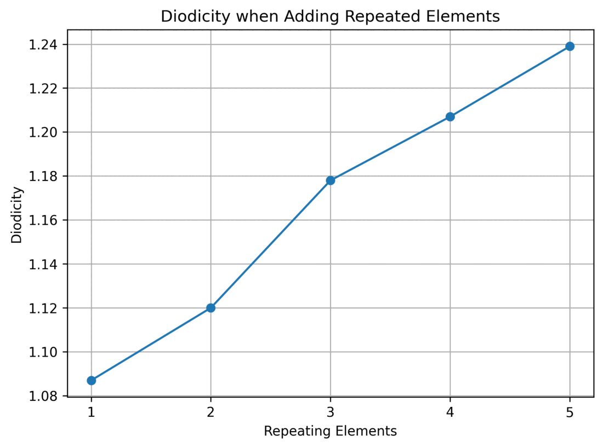
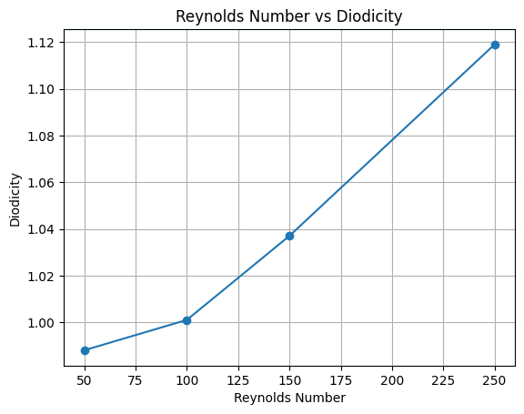

Tesla Valve CFD Study

A Tesla valve has no moving parts, yet fluid flows through it more easily one way than the other. I wanted to know what controls that asymmetry. Across more than fifteen ANSYS simulations, I varied flow speed and the number of repeating loops. Each added loop raised the effect by a predictable amount. I then reshaped the valve's internal geometry and improved its one-way behavior by 8.65% at low flow rates, where the effect is usually weakest.


